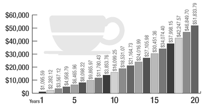
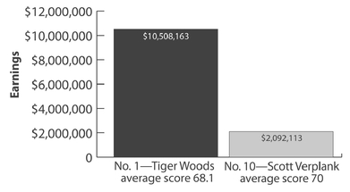
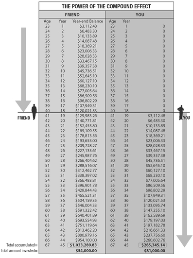
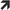

CHAPTER 2
CHOICES
We all come into this world the same: naked, scared, and ignorant. After that grand entrance, the life we end up with is simply an accumulation of all the choices we make. Our choices can be our best friend or our worst enemy. They can deliver us to our goals or send us orbiting into a galaxy far, far away.
Think about it. Everything in your life exists because you first made a choice about something. Choices are at the root of every one of your results. Each choice starts a behavior that over time becomes a habit. Choose poorly, and you just might find yourself back at the drawing board, forced to make new, often harder choices. Don’t choose at all, and you’ve made the choice to be the passive receiver of whatever comes your way.
In essence, you make your choices, and then your choices make you. Every decision, no matter how slight, alters the trajectory of your life—whether or not to go to college, whom to marry, to have that last drink before you drive, to indulge in gossip or stay silent, to make one more prospecting call or call it a day, to say I love you or not. Every choice has an impact on the Compound Effect of your life.
This chapter is about becoming aware of and making choices that support the expansion of your life. Sounds complicated, but you’ll be amazed by its simplicity. No longer will 99 percent of your choices be unconscious. No more will most of your daily routines and traditions come as a reaction to your programming. You’ll ask yourself (and be able to answer), “How many of my behaviors have I not ‘voted on’? What am I doing that I didn’t consciously choose to do, yet continue to do every day?”
By employing the same idiot-proof strategies I’ve used to catapult my own life and career, strengthened by the Compound Effect, you’ll be able to loosen the mysterious grip of the things that are unwinding your life and pulling you in the wrong direction. You’ll be able to hit the Pause button before stumbling into idiot territory. You’ll experience the ease of making decisions that lead to behaviors and habits that support you, every time.
Your biggest challenge isn’t that you’ve intentionally been making bad choices. Heck, that would be easy to fix. Your biggest challenge is that you’ve been sleepwalking through your choices. Half the time, you’re not even aware you’re making them! Our choices are often shaped by our culture and upbringing. They can be so entwined in our routine behaviors and habits that they seem beyond our control. For instance, have you ever been going about your business, enjoying your life, when all of sudden you made a stupid choice or series of small choices that ultimately sabotaged your hard work and momentum, all for no apparent reason? You didn’t intend to sabotage yourself, but by not thinking about your decisions—weighing the risks and potential outcomes—you found yourself facing unintended consequences. Nobody intends to become obese, go through bankruptcy, or get a divorce, but often (if not always) those consequences are the result of a series of small, poor choices.
Elephants Don’t Bite
Have you ever been bitten by an elephant? How about a mosquito? It’s the little things in life that will bite you. Occasionally, we see big mistakes threaten to destroy a career or reputation in an instant—the famous comedian who rants racial slurs during a stand-up routine, the drunken anti-Semitic antics of a once-celebrated humanitarian, the anti-gay-rights senator caught soliciting gay sex in a restroom, the admired female tennis player who uncharacteristically threatens an official with a tirade of expletives. Clearly, these types of poor choices have major repercussions. But even if you’ve pulled such a whopper in your past, it’s not extraordinary massive steps backward or the tragic single moments that we’re concerned with here.
For most of us, it’s the frequent, small, and seemingly inconsequential choices that are of grave concern. I’m talking about the decisions you think don’t make any difference at all. It’s the little things that inevitably and predictably derail your success. Whether they’re bone-headed maneuvers, no-biggie behaviors, or are disguised as positive choices (those are especially insidious), these seemingly insignificant decisions can completely throw you off course because you’re not mindful of them. You get overwhelmed, space out, and are unaware of the little actions that take you way off course. The Compound Effect works, all right. It always works, remember? But in this case it works against you because you’re doing… you’re sleepwalking.
For instance, you inhale a soda and bag of potato chips and suddenly realize only after you polished off the last chip that you blew an entire day of healthy eating—and you weren’t even hungry. You get caught up and lose two hours watching mindless TV—scratch that, let’s give you some credit and make it an educational documentary—before realizing you spaced on preparing for an important presentation to land a valuable client. You blurt out a knee-jerk lie to a loved one for no good reason, when the truth would have worked just fine. What’s going on?
You’ve allowed yourself to make a choice without thinking. And as long as you’re making choices unconsciously, you can’t consciously choose to change that ineffective behavior and turn it into productive habits. It’s time to WAKE UP and make empowering choices.
Thanksgiving Year-Round
It’s easy to point fingers at others, isn’t it? “I’m not getting ahead because of my lame boss.” “I would have gotten that promotion if it hadn’t been for that backstabbing co-worker.” “I’m always in a bad mood because my kids are driving me crazy.” We’re particularly gifted in the finger-pointing department when it comes to our romantic relationships—you know, where the other person is the one who needs to change.
A few years back, a friend of mine was complaining about his wife. From my observation, she was a terrific lady, and he was lucky to have her. I told him as much, but he continued to point out all the ways she was responsible for his unhappiness. That’s when I shared an experience that had literally changed my marriage. One Thanksgiving, I decided to keep a Thanks Giving journal for my wife. Every day for an entire year I logged at least one thing I appreciated about her—the way she interacted with her friends, how she cared for our dogs, the fresh bed she prepared, a succulent meal she whipped up, or the beautiful way she styled her hair that day—whatever. I looked for the things my wife was doing that touched me, or revealed attributes, characteristics, or qualities I appreciated. I wrote them all down secretly for the entire year. By the end of that year, I’d filled an entire journal.
When I gave it to her the following Thanksgiving, she cried, calling it the best gift she’d ever received. (Even better than the BMW I’d given her for her birthday!) The funny thing was that the person most affected by this gift was me. All that journaling forced me to focus on my wife’s positive aspects. I was consciously looking for all the things she was doing “right.” That heartfelt focus overwhelmed anything I might have otherwise complained about. I fell deeply in love with her all over again (maybe even more than ever, as I was seeing subtleties in her nature and behavior instead of her more obvious qualities). My appreciation, gratitude, and intention to find the best in her was something I held in my heart and eyes each day. This caused me to show up differently in my marriage, which, of course, made her respond differently to me. Soon, I had even more things to write in my Thanks Giving journal! As a result of choosing to take a mere five minutes every day or so to document all the reasons why I was grateful for her, we experienced one of the best years of our marriage, and it’s only gotten better.
After I shared my experience, my friend decided to keep a Thanks Giving journal about his wife. Within the first few months, he completely turned around his marriage. Choosing to look for and focus on his wife’s positive qualities changed his view of her, which changed how he interacted with her. As a result, she made different choices about the way she responded to him. The cycle perpetuated. Or, shall we say, compounded.
Owning 100 Percent
We are all self-made men and women, but only the successful take credit for it. I was eighteen when I was introduced to the idea of personal responsibility at a seminar, and the concept completely transformed my life. If you threw out the rest of this book and only practiced this one concept, within two to three years the changes in your life would be so great, your friends and family would have difficulty remembering the “old you.”
In that seminar I attended at eighteen, the speaker asked, “What percentage of shared responsibility do you have in making a relationship work?” I was a teenager, so wise in the ways of true love. Of course I had all the answers.
“Fifty/fifty!” I blurted out. It was so obvious; both people must be willing to share the responsibility evenly or someone’s getting ripped off.
“Fifty-one/forty-nine,” yelled someone else, arguing that you’d have to be willing to do more than the other person. Aren’t relationships built on self-sacrifice and generosity?
“Eighty/twenty,” yelled another.
The instructor turned to the easel and wrote 100/0 on the paper in big black letters. “You have to be willing to give 100 percent with zero expectation of receiving anything in return,” he said. “Only when you’re willing to take 100 percent responsibility for making the relationship work will it work. Otherwise, a relationship left to chance will always be vulnerable to disaster.”
Whoa. This wasn’t what I was expecting! But I quickly understood how this concept could transform every area of my life. If I always took 100 percent responsibility for everything I experienced—completely owning all of my choices and all the ways I responded to whatever happened to me—I held the power. Everything was up to me. I was responsible for everything I did, didn’t do, or how I responded to what was done to me.
I know you think you take responsibility for your life. I’ve yet to ask anybody who doesn’t say, “Of course, I take responsibility for my life.” But then you look at how most people operate in the world; there’s a lot of finger pointing, victimhood, blaming, and expecting someone else or the government to solve their problems. If you’ve ever blamed traffic for being late, or decided you are in a bad mood because of something your kid, spouse, or co-worker did, you’re not taking 100 percent personal responsibility. You arrived late because the printer was busy? Maybe you shouldn’t have waited until the last minute? Co-worker messed up the presentation? Shouldn’t you have double-checked it yourself before delivering it? Not getting along with your unreasonable teen? There are a countless fantastic books and classes to help you learn how to deal.
You alone are responsible for what you do, don’t do, or how you respond to what’s done to you. This empowering mindset revolutionized my life. Luck, circumstances, or the right situation wasn’t what mattered. If it was to be, it was up to me. I was free to fly. No matter who was elected president, how badly the economy tanked, or what anybody said, did, or didn’t do, I was still 100 percent in control of me. Through choosing to be officially liberated from past, present, and future victimhood, I’d hit the jackpot. I had the unlimited power to control my destiny.
Getting Lucky
Maybe you believe you’re simply unlucky. But really, that’s just another excuse. The difference between becoming fabulously rich, happy, and healthy, or broke, depressed, and unhealthy, is the choices you make throughout life. Nothing else will make the difference. Here’s the thing about luck: We’re all lucky. If you are on the right side of the dirt, have your health, and a little food in your cupboard, you are incredibly lucky. Everyone has the opportunity to be “lucky,” because beyond having the basics of health and sustenance, luck simply comes down to a series of choices.
When I asked Richard Branson if he felt luck played a part in his success, he answered, “Yes, of course, we are all lucky. If you live in a free society, you are lucky. Luck surrounds us every day; we are constantly having lucky things happen to us, whether you recognize it or not. I have not been any more lucky or unlucky than anyone else. The difference is when luck came my way, I took advantage of it.”
Ah, spoken like a man knighted with wisdom. While we’re on the topic, it’s my belief that the old adage we often hear—“Luck is when opportunity meets preparation”—isn’t enough. I believe there are two other critical components to “luck.”
The (Complete) Formula for Getting Lucky:
Preparation (personal growth) +
Attitude (belief/mindset) +
Opportunity (a good thing coming your way) +
Action (doing something about it) =
Luck
Preparation: By consistently improving and preparing yourself—your skills, knowledge, expertise, relationships, and resources—you have the wherewithal to take advantage of great opportunities when they arise (when luck “strikes”). Then, you can be like Arnold Palmer, who told SUCCESS magazine in February of 2009, “It’s a funny thing; the more I practice, the luckier I get.”
Attitude: This is where luck evades most people, and where Sir Richard is spot-on with his belief that luck is all around us. It’s simply a matter of seeing situations, conversations, and circumstances as fortuitous. You cannot see what you don’t look for, and you cannot look for what you don’t believe in.
Opportunity: It’s possible to make your own luck, but the luck I’m talking about here isn’t planned for, or it comes faster or differently than expected. In this stage of the formula, luck isn’t forced. It’s a natural occurrence, and it often shows up seemingly of its own accord.
Action: This is where you come in. However this luck was delivered to you—from the universe, God, the Lucky Charms leprechaun, or whomever or whatever you associate delivering your good fortune—it’s now your job to act on it. This is what separates the Richard Bransons from the Joseph Wallingtons. Joseph who? Exactly. You’ve never heard of him. That’s because he failed to take action on all the lucky things that happened to him.
So no more whining about the cards you were dealt, the great defeats you suffered, or any other circumstances. Countless people have more disadvantages and greater obstacles than you, and yet they’re wealthier and more fulfilled. Luck is an equal-opportunity distributor. Lady luck shines on all, but rather than having your umbrella overhead, you’ve got to have your face to the sky. When it comes down to it, it’s all you, baby. There’s no other way around it.
The High Price of Tuition at UHK (University of Hard Knocks)
Nearly a decade ago I was asked to be a partner in a new startup venture. I invested a considerable sum of money into the deal and worked tirelessly on it for nearly two years before finding out that my partner had mismanaged and squandered all the cash. I lost more than $330,000. I didn’t try to sue him; in fact, I lent him more money later for a personal situation. The bottom line was the loss was my fault. I had agreed to be his partner without doing enough due diligence on his background and personal character. During our time in business, I wasn’t inspecting what I was expecting. I could justify it by saying I trusted him, but the truth was I was guilty of being lazy by not watching the finances more diligently. Not only had I made the choice to start this relationship and business, but I’d also made many choices to ignore obvious red flags and warning signs. Because I chose to not be completely responsible for the business, in the end, I was responsible for the results. When I learned of the wrongdoings, I chose not to lose any more time fighting it. Instead, I licked my wounds, learned my lesson, and moved on. In hindsight, I’d make the same choice to pick up and move on again today.
I now challenge you to do the same. No matter what has happened to you, take complete responsibility for it—good or bad, victory or defeat. Own it. My mentor Jim Rohn said, “The day you graduate from childhood to adulthood is the day you take full responsibility for your life.”
Today is graduation day! From this day forward, choose to be 100 percent responsible for your life. Eliminate all of your excuses. Embrace the fact that you are freed by your choices, as long as you assume personal responsibility for them.
It’s time to make the choice to take control.
Your Secret Weapon—Your Scorecard
I’m about to walk you through one of the single greatest strategies I’ve ever used in my personal development. This strategy helps me take control of the choices I make throughout the day, causing everything else to fall into place, and leading to behaviors and actions that shepherd my habits into line like dutiful, loyal minions.
Right this moment: Pick an area of your life where you most want to be successful. Do you want more money in the bank? A trimmer waistline? The strength to compete in an Iron Man event? A better relationship with your spouse or kids? Picture where you are in that area, right now. Now picture where you want to be: richer, thinner, happier, you name it. The first step toward change is awareness. If you want to get from where you are to where you want to be, you have to start by becoming aware of the choices that lead you away from your desired destination. Become very conscious of every choice you make today so you can begin to make smarter choices moving forward.
To help you become aware of your choices, I want you to track every action that relates to the area of your life you want to improve. If you’ve decided you want get out of debt, you’re going to track every penny you pull from your pocket. If you’ve decided you want to lose weight, you’re going to track everything you put into your mouth. If you’ve decided to train for an athletic event, you’re going to track every step you take, every workout you do. Simply carry around a small notebook, something you’ll keep in your pocket or purse at all times, and a writing instrument. You’re going to write it all down. Every day. Without fail. No excuses, no exceptions. As if Big Brother’s watching you. As if my dad and I will come and make you do a hundred pushups every time you miss.
Doesn’t sound like much, I know—writing things down on a little piece of paper. But tracking my progress and missteps is the one of the reasons I’ve accumulated the success I have. The process forces you to be conscious of your decisions. But as Jim Rohn would say, “What’s simple to do is also simple not to do.” The magic is not in the complexity of the task; the magic is in the doing of simple things repeatedly and long enough to ignite the miracle of the Compound Effect. So, beware of neglecting the simple things that make the big things in your life possible. The biggest difference between successful people and unsuccessful people is that successful people are willing to do what unsuccessful people are not. Remember that; it will come in handy many times throughout life when faced with a difficult, tedious, or tough choice.
Money Trap
I learned the power of tracking the hard way, after I’d acted like a colossal idiot about my finances. Back in my early twenties, when I was making a lot of money selling real estate, I met with my accountant.
“You owe well over $100,000 in taxes,” he said.
“What?!” I said. “I don’t have that kind of cash just lying around.”
“Why not?” he asked. “You collected several times that; certainly you set aside the taxes that would be due on that money.”
“Evidently I didn’t,” I said.
“Where did the money go?” he asked.
“I don’t know,” I said, a sobering confession, for sure. The money had passed through my hands like water, and I hadn’t even noticed!
Then my accountant did me a great favor.
“Son,” he said, looking me dead in the eyes, “you’ve got to get a grip. I’ve seen this a hundred times before. You’re spending money like a drunken fool, and you don’t even know how to account for it. That’s stupid. Stop it. You are now seriously in the hole. You have to earn more money that you’ll owe additional taxes on just to pay for your back taxes. Continue this, and you’ll dig your financial grave with your own wallet.”
I immediately got the message.
Here’s what my accountant had me do: carry a small notepad in my back pocket, and write down every single cent I spent for thirty days. Whether it was a thousand dollars for a new suit or fifty cents for air to fill up my tires, it all had to go down on the notepad. Wow. This brought an instantaneous awareness of the many unconscious choices I was making that resulted in money pouring out of my pockets. Because I had to log everything, I resisted buying some things, just so I didn’t have to take out the notepad and write it in the dang book!
Keeping a money log for thirty days straight cemented a new awareness in me, and created a completely new set of choices and disciplines around my spending. And, since awareness and positive behaviors compound, I found myself being more proactive with money in general, putting away more for retirement, finding areas to save where there was clear waste, and enjoying the fun quotient of money—“play money”—all the more. When I did consider shelling out for entertainment, I did so only after a long pause.
This tracking exercise changed my awareness of how I related to my money. It worked so well, in fact, that I’ve used it many times to change other behaviors. Tracking is my go-to transformation model for everything that ails me. Over the years I’ve tracked what I eat and drink, how much I exercise, how much time I spend improving a skill, my number of sales calls, even the improvement of my relationships with family, friends, or my spouse. The results have been no less profound than my money-tracking wake-up call.
In buying this book, you’re basically paying me for my opinion, my guidance. This is where I’m going to become a hard-ass and insist you track your behaviors for at least one whole week. This book isn’t designed to entertain you; it is designed to help you get results. To get results, you have to take some action.
You may have heard about tracking before. In fact, you’ve probably done your own version of this exercise. But I also bet you aren’t doing it now, right? How do I know? Because your life isn’t working as successfully as you’d like. You’ve gotten derailed. Tracking is the way to get it back on track.
Do you know how the casinos make so much money in Vegas? Because they track every table, every winner, every hour. Why do Olympic trainers get paid top dollar? Because they track every workout, every calorie, and every micronutrient for their athletes. All winners are trackers. Right now I want you to track your life with the same intention: to bring your goals within sight.
Tracking is a simple exercise. It works because it brings moment-to-moment awareness to the actions you take in the area of your life you want to improve. You’ll be surprised at what you will observe about your behavior. You cannot manage or improve something until you measure it. Likewise, you can’t make the most of who you are—your talents and resources and capabilities—until you are aware of and accountable for your actions. Every professional athlete and his or her coach track each performance down to the smallest minutiae. Pitchers know their stats on every pitch in their repertoire. Golfers have even more metrics on their swings. Professional athletes know how to adjust their performances based on what they’ve tracked. They pay attention to what they record and make changes accordingly, because they know when their stats improve they win more games and earn more in endorsement deals.
At any given moment, I want you to know exactly how well you’re doing. I’m asking you to track yourself as if you’re a valuable commodity. Because you are. Want that idiot-proof system we talked about earlier? This is it. So, regardless of whether you think you’re aware of your habits or not (believe me, you’re not!), I’m asking you to start tracking. Doing so will revolutionize your life, and ultimately, your lifestyle.
Keep It Slow and Easy
Don’t panic. We’re starting off with an easy, breezy tempo. Just track one habit for one week. Pick the habit that has the greatest control over you; that’s where you’ll start. Once you begin reaping the rewards of the Compound Effect, you’ll naturally want to introduce this practice into other areas of your life. In other words, you’ll choose to choose tracking.
Let’s say the category you choose is getting your eating under control because you want to lose weight. Your task is to write down everything you put in your mouth, from the steak, potatoes, and salad you have at dinner, to those many tiny choices during the day—that handful of pretzels in the break room, that second slice of cheese on your sandwich, that “fun-sized” candy bar, that sample at Costco, those extra sips of wine after the host tops off your glass. Don’t forget the beverages. They all add up, but unless tracked, they’re easy to dismiss or forget because they seem so small. Again, merely writing these things down sounds simple—and it is—BUT ONLY WHEN YOU DO IT. That’s why I’m asking that you commit to choosing a category and a start date, now, before you turn this page.
I am going to start tracking _______________ on ____________.
[date/month/year]
What will the tracking look like? It will be thorough, as in organized. And relentless, as in constant. Each day you’ll start with the date at the top of a fresh page, and start keeping track.
What happens after the first week of tracking? You’ll probably be in shock. You’ll be astonished at how those calories, pennies, minutes have been escaping you. You never even knew that they were there, let alone that they’d vanished.
Now, keep going. You’re going to track in this one area for three weeks. Maybe you’re already groaning; you just don’t want to do it. But trust me: You’ll be so blown away by the results after one week you’ll sign yourself up for another two. I can practically guarantee it.
Why three weeks? You’ve heard psychologists say that something doesn’t become a habit until you practice it for three weeks. It’s not an exact science, but it’s a good benchmark, and it has worked for me. So, ideally, I want you to stick with your choice to track your behaviors for twenty-one days. If you refuse, I’m not going to lose anything (heck, it’s not my waistline, cardiovascular health, bank balance, or relationship you’re messing with!). But, seriously, you’re reading this book because you want to change your life, right? And I promised you it was going to take slow, steady work, didn’t I? This one action isn’t easy, but it’s simple and doable. So do it.
Promise yourself to start. Today. For the next three weeks, choose to carry around your own small notepad (or large one, if that’s more enticing), and write every single thing down in your category.
What happens in three weeks? You move from the shock that follows the first week to the happy surprise of seeing how merely becoming conscious of your actions begins to shape them. You’ll find yourself asking, “Do I really want that candy bar? I’m gonna have to haul out my notebook and write it down, and I’ll feel a little sheepish.” That’s two hundred calories saved right there. Turn down that candy bar every day, and in a little more than two weeks, you’ll have already lost a pound! You’ll start adding up that $4.00 coffee on the way to work and realize,
Holy cow! I’ve just spent sixty bucks on coffee in three weeks! Hey, that’s a thousand bucks a year! Or, compounded, that’s $51,833.79 in twenty years! How much do you
really need to stop for coffee? See
Figure 3.
The real cost of a four-dollar-a-day coffee habit over 20 years is $51,833.79. That’s the power of the Compound Effect.

Come again? Am I saying that your four-dollar-a-day coffee habit is going to cost you $51,833.79 in twenty years? Yes, I am. Did you know that every dollar you spend today, no matter where you spend it, is costing you nearly five dollars in only twenty years (and ten dollars in thirty years)? That’s because if you took a dollar and invested it at 8 percent, in twenty years, that dollar would be worth almost five. Every time you spend a buck today, it’s like taking five dollars out of your future pocket.
I used to make the mistake of looking at a price tag and thinking that if an item was listed at fifty dollars, it cost me fifty dollars. Well, yes, in today’s dollars. But if you consider the potential value of that same fifty dollars after it has been invested for twenty years the cost (what you lose by spending that money rather than investing it) is four or five times greater! In other words, every time you look at an item that costs fifty dollars you have to ask, “Is this item worth $250?” If it’s worth $250 to you today, then it’s worth buying. Keep that in mind next time you go to a place like Costco, with all sorts of amazing things that you didn’t know you had to have. You go in to buy twenty-five dollars’ worth of necessities and walk out with $400 of stuff instead. My garage looks like a Costco graveyard. Next time you walk into one of those bargain basement stores, assess things from this future-value standpoint. Chances are you’ll put down that fifty-dollar crepe maker so Future You will have $250 more in the bank. Make the correct choice every day, every week for many years, and you can quickly see how you can become financially abundant.
When you track with this awareness, you’ll find yourself showing up in your life very differently. You’ll be able to ask yourself, “Is having a coffee once every workday worth the eventual price of a Mercedes-Benz?” Because that’s what it’s costing you. Even more than that, you’re not sleepwalking anymore. You’re aware and conscious and making better choices. All from a little notebook and pen. Simply amazing, isn’t it?
The Unsung, Unseen Hero
Once you start tracking your life, your attention will be focused on the smallest things you’re doing right, as well as the smallest things you’re doing wrong. And when you choose to make even the smallest course corrections consistently, over time, you’ll begin to see amazing results. But don’t expect immediate fanfare. When I say “small” course corrections, I’m talking truly invisible. Chances are no one’s going to notice them anytime soon. There will be no applause. No one’s going to send you a congratulations card or a trophy for these disciplines. And yet, eventually, their compounding effect will result in an exceptional payoff. It’s the littlest disciplines that pay off over time, the effort and preparation for the great triumph that happened when no one was looking. And yet the results are exceptional. A horse wins by a nose, but gets 10 times the prize money. Is the horse 10 times faster? No, just a little bit better. But it was those extra laps around the track, the extra discipline in the horse’s nutrition, or the extra work by the jockey that made the results a slight bit better with compounded rewards.
After hundreds of tournaments played and thousands of strokes tallied, the difference between the No. 1 ranked golfer and the No. 10 golfer is an average of only 1.9 strokes, but the difference in prize money is five times (over $10 million versus $2 million)! The No. 1 golfer isn’t five times better, not even 50 percent or even 10 percent better. In fact, the difference between his average score is only 2.7 percent better. Yet, the results are five times greater! See
Figure 4.
The difference between the No. 1 ranked golfer and the No. 10 golfer is an average of only 1.9 strokes, but the difference in prize money is five times. That’s the power of the Compound Effect.
[Source: FedEx Cup Ranking as of mid-December 2009]

That’s the power of little things adding up. It’s not the big things that add up in the end; it’s the hundreds, thousands, or millions of little things that separate the ordinary from the extraordinary. To be one stroke better requires countless little things that don’t get accounted for when you’re putting on the green jacket.
Let me give you a few more ways tracking small changes can result in huge payoffs.
Take a Walk
I was mentoring a CEO of a sizeable company doing more than $100 million in sales annually. Phil was an entrepreneur and founder of the company. The company was doing fine, but I detected a lack of engagement, trust, and enthusiasm in the culture of his organization. I wasn’t too surprised; it turns out that Phil hadn’t been in parts of his own building for more than five years! He’d never spoken personally to more than 80 percent of his staff! He basically lived in a bubble with his management team. I asked Phil to track just one change: three times a week, he had to step outside of his office and walk around the building. His goal was to seek out at least three people whom he saw doing things right or had heard good things about and give them some personal acknowledgment of his appreciation. This one small change in his behavior took less than an hour a week, but had massive effects over time. The employees Phil took the time to recognize began to go the extra mile and work harder to earn his greater appreciation. Other employees started to perform better, observing that great effort was recognized and appreciated. The ripple effect of their new attitude transferred to their customer interactions, improving the customers’ experience with the company, increasing repeat and referral business, which increased everyone’s pride. That simple change over the period of eighteen months did a complete 180 on the company culture. Net profits grew by more than 30 percent during that time, utilizing the same staff and zero additional investment in marketing. All because Phil committed to one small, seemingly insignificant step done consistently over time.
Money Tree
Twelve years ago I had a wonderful assistant, Kathleen. She earned $40,000 a year at the time. She was tasked to manage the registration table situated at the back of the room during one of my lectures on entrepreneurship and wealth building. The next week she came into my office. “I heard you talk about saving 10 percent of everything you earn,” she told me. “That sounds nice, but there is no way I could do that. It’s totally unrealistic!” She proceeded to tell me about all her bills and financial obligations. After she wrote them all out, it was obvious there really wasn’t any money left over at the end of the month. “I need a raise,” she said.
“I’ll do better than that,” I told her. “I’m going to teach you how to become wealthy.” It wasn’t the answer she was looking for, but she agreed.
I taught Kathleen how to track her spending, and she began to carry her notebook. I told her to open a separate savings account with only $33—just 1 percent of her existing monthly income. I then showed her how to live on $33 less the next month—bring in her own lunch just one day a week instead of going downstairs to the deli and ordering a sandwich, chips, and a drink. The next month I had her save only 2 percent ($67). She saved the additional $33 by changing her cable subscription service. The next month we went up to 3 percent. We canceled her subscription to People magazine (it was time to study her own life), and instead of going to Starbucks twice a week, I told Kathleen to buy the Starbucks beans and other fancy fixings and make her own coffee in the office (she grew to like that even better—me too!).
By the end of the year, Kathleen was saving 10 percent of every dollar she earned without noticing a significant impact on her lifestyle. She was amazed! That one discipline also had a ripple effect on many other disciplines in her life. She calculated what she spent on mind-numbing entertainment and began investing that money on personal growth instead. After feeding her mind with several hundred hours of inspirational and instructional content, her creativity started to soar. She brought me several ideas on how we could make and save more money in our organization. She presented me with a plan that she would implement in her spare time, if I promised to reward her with 10 percent of all the money-saving strategies and 15 percent of all the new revenue strategies that proved profitable. By the end of the second year, she was earning more than $100,000 a year—on the same $40,000 base salary. Kathleen eventually started her own independent contract service business that took off. I ran into Kathleen at an airport two years ago. She now earns more than a quarter of a million dollars a year and has saved and created more than $1 million in assets—she’s a millionaire! All starting from the choice to take one small step and start saving $33 a month!
Time Is of the Essence
The earlier you start making small changes, the more powerfully the Compound Effect works in your favor. Suppose your friend listened to Dave Ramsey’s advice and began putting $250 a month into an IRA when she got her first job after graduating from college at age twenty-three. You, on the other hand, don’t start saving until you’re forty. (Or maybe you started saving a little earlier but cleaned out your retirement account because you didn’t notice any great gains.) By the time your friend is forty, she never has to invest another dollar and will have more than a $1 million by the age of sixty-seven, growing at 8 percent interest compounded monthly. You continue to invest $250 every month until you reach sixty-seven, the normal retirement age for Social Security for those born after 1960. (That means you’re saving for twenty-seven years in contrast to her seventeen years.) When you’re ready to retire, you’ll have less than $300,000 and will have invested $27,000 more than your friend. Even though you saved for many more years and invested much more cash, you still ended up with less than a third of the money you could have had. That’s what happens when we procrastinate and neglect necessary behaviors, habits, and disciplines. Don’t wait another day to start the small disciplines that will lead you in the direction of your goals! See
Figure 5.

Are you telling yourself that you’re starting so late that you’re already way behind the eight ball and can never catch up? That’s just another tired tape in your head; it’s time to turn it off. It’s never too late to reap the benefits of the Compound Effect. Suppose you’ve always wanted to play the piano, but feel it’s too late because you’re about to turn forty. If you start now, by the time you’re retirement age, you could be a master, as you’ll have been playing for twenty-five years! The key is to start NOW. Every great act, every fantastic adventure, starts with small steps. The first step always looks harder than it actually is.
But what if twenty-five years is too long? What if you’ve only got time or patience for ten years? In Brian Tracy’s book Focal Point (Amacom, 2002), he models how to improve any area of your life by 1,000 percent. Not 10 percent or even 100 percent, but 1,000 percent! Let me outline it for you.
All you have to do is improve yourself, your performance, and your output and earnings by 1/10 of 1 percent each workday (you even get to slack off on weekends). That is 1/1,000. Do you think you could do that? Of course, anyone could do that. Simple. Do it each day of the week, and you’ll improve by ½ percent each week (translation: not much), equaling 2 percent each month, which, compounded, adds up to 26 percent each year. Your income now doubles each 2.9 years. By Year Ten, you can be performing and earning 1,000 percent what you are now. Isn’t that amazing? You don’t have to put in 1,000 percent more effort or work 1,000 percent more hours. Just 1/10 of 1 percent improvement each day. That’s it.
Success Is a (Half-) Marathon
Beverly was a salesperson for an educational software company for which I was doing a turnaround. One day she told me about her friend who was running a half-marathon the upcoming weekend. “I could never do such a thing,” Beverly, who was significantly overweight, assured me. “I get winded going up a single flight of stairs!”
“If you want to, you can choose to do what your friend is doing,” I told her. She balked, saying, “There’s absolutely no way.”
My first step was to help Beverly find her motivation. “So, Beverly, why would you want to run the half-marathon?”
“Well, my twenty-year high-school reunion is coming up next summer, and I want to look fabulous. But I’ve gained so much weight since I had my second child five years ago. I don’t know how I can do it.”
Bingo! Now we had a motivating goal. But I proceeded with caution. If you’ve ever tried to lose weight, you probably know the drill: Buy an expensive gym membership, drop a fortune on personal trainers, new equipment, spiffy new workout clothes, and great athletic footwear. Work out vigorously for a week or so and then turn your elliptical machine into a clothes-drying rack, ditch the gym, and let your sneakers mold in the corner. I wanted to try a better way with Beverly. I knew that if I could get her to choose just one new habit, she’d get hooked, and all the other behaviors would naturally fall into line.
I asked Beverly to drive her car around the block and map out a one-mile loop from her house. Then, I told her to walk the loop three times over a period of two weeks. Notice that I didn’t ask her to start by running the mile. Instead, I started with something—a small, easy task that required no major stretch. Then I had her walk the loop three times in one week for an additional two weeks. Each day she made the choice to continue on.
Next I told Beverly to start a slow jog, only as far as she felt comfortable. As soon as she started feeling breathless, she was to stop and continue walking. I asked her to do this until she could run one-fourth, then one-half, and then three-quarters of that mile. It took three more weeks—nine outings—before she could jog a full mile. After a total of seven weeks, she was jogging the whole loop. That might seem like a long time for such a short victory, right? After all, half of a marathon is 13.1 miles. One mile is nothing. What was something, however, was that Beverly was beginning to see how her choice to get fit for the reunion—her why-power (as I’ll soon explain)—was fueling her new health habits. The Compound Effect had been set in motion and was starting its miraculous process.
I then asked Beverly to increase her distance an eighth of a mile each outing (an almost unnoticeable length, maybe only 300 steps further). Within six months, she was running nine miles without any discomfort at all. In nine months, she was running 13.5 miles regularly (more than the distance of a half-marathon) as part of her running routine. More exciting, though, was what happened in other areas of her life. Beverly lost her cravings for chocolate (a lifelong obsession) and heavy, fatty foods. Gone. The increased energy she felt from the cardiovascular exercise and better eating choices helped her bring more enthusiasm to her work. Her sales performance doubled during the same period (which was great for me!).
As we saw in the previous chapter, the ripple effects of all this momentum raised her self-esteem which made her more affectionate toward her husband. Their relationship became more passionate than it had been since college. Because she had renewed energy, her interaction with her children became more active and animated. She noticed she no longer had time to hang out with her “Debbie Downer” friends, who still gathered together after work for greasy appetizers and drinks. She made new “healthy” friends in a running club she joined—which led to a whole host of additional positive choices, behaviors, and habits.
Following that first conversation in my office and Beverly’s decision to find her why-power and commit to a series of small steps, she lost more than forty pounds, becoming a walking (and running) billboard for fit and empowered women. Today, Beverly runs full marathons!
Your life is the product of your moment-to-moment choices. In our SUCCESS CD (May 2010), TV’s Biggest Loser fitness trainer Jillian Michaels shared with me a powerful childhood story: “When I was a kid, my mom would have these elaborate Easter egg hunts for me. I would run around the house, and when I would get close to a hidden egg, she’d say, ‘Oh you’re warm.’ You know, you get closer to it, ‘Oh, you’re on fire.’ And then you move away from the egg and she’d go, ‘Oh, you’re cold, you’re freezing.’ I teach contestants that, on a moment-to-moment basis, I need them to think about their happiness and their ultimate goal as being warm—how every choice and every decision they make in the moment is getting them closer to that ultimate goal.”
Since your outcomes are all a result of your moment-to-moment choices, you have incredible power to change your life by changing those choices. Step by step, day by day, your choices will shape your actions until they become habits, where practice makes them permanent.
Losing is a habit. So is winning. Now let’s work on permanently instilling winning habits into your life. Eliminate sabotaging habits and instill the needed positive habits, and you can take your life in any direction you desire, to the heights of your greatest imagination. Let me show you how…
Put the Compound Effect to Work for You
Summary Action Steps
What area, person, or circumstance in your life do you struggle with the most? Start journaling all the aspects of that situation that you are grateful for. Keep a record of everything that reinforces and expands your gratitude in that area.
Where in your life are you not taking 100 percent responsibility for the success or failure of your present condition? Write down three things you have done in the past that have messed things up. List three things you should have done but didn’t. Write out three things that happened to you but you responded poorly. Write down three things you can start doing right now to take back responsibility for the outcomes of your life.
Start tracking at least one behavior in one area of your life you’d like to change and improve (e.g., money, nutrition, fitness, recognizing others, parenting… any area).